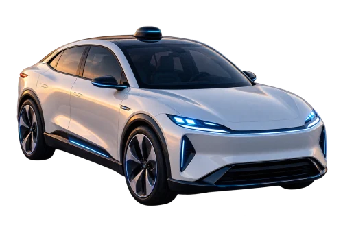
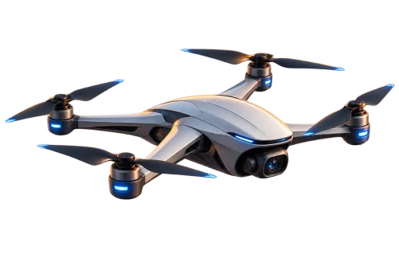
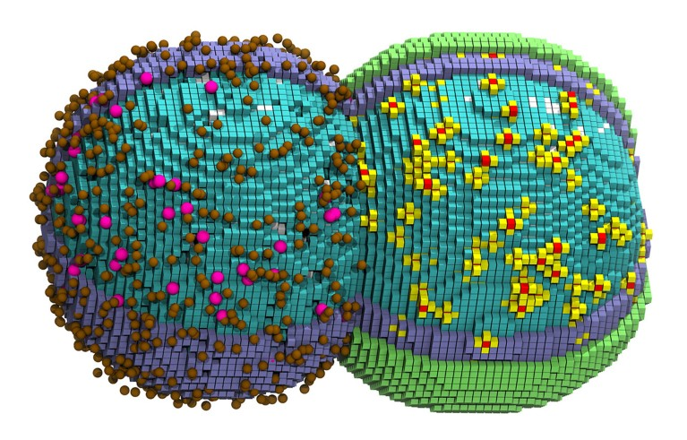

AI 2026 · Part 3, Agents
This is Part III in a three-part series looking at Chips , Models , and Agents .
By Rhys Lindmark et al
Today is Day 1 of the singularity.
We have intelligence too cheap to meter.
What can this intelligence do?
Let’s look at:
Coding White-collar labor Blue-collar labor Science U.S. workers Claude conversations
AI usage by job type · February 2025 Computer and mathematical jobs: 3.4% of U.S. workers, 37.2% of Claude conversations. Scroll to compare the two distributions. 0% 10% 20% 30% 40% SHARE OF EACH TOTAL (%) Office and administrative support: 12.2% of U.S. workers; 7.9% of Claude conversations Office & admin 12.2% 7.9% Transportation and material moving: 9.1% of U.S. workers; 0.3% of Claude conversations Transport & moving 9.1% 0.3% Sales and related: 8.8% of U.S. workers; 2.3% of Claude conversations Sales 8.8% 2.3% Food preparation and serving related: 8.7% of U.S. workers; 0.5% of Claude conversations Food preparation 8.7% 0.5% General management: 6.9% of U.S. workers; 4.5% of Claude conversations Management 6.9% 4.5% Business and financial operations: 6.6% of U.S. workers; 5.9% of Claude conversations Business & finance 6.6% 5.9% Healthcare practitioners and technical: 6.1% of U.S. workers; 2.6% of Claude conversations Healthcare practitioners 6.1% 2.6% Production services: 5.8% of U.S. workers; 2.9% of Claude conversations Production 5.8% 2.9% Education instruction and library: 5.8% of U.S. workers; 9.3% of Claude conversations Education & library 5.8% 9.3% Healthcare support: 4.7% of U.S. workers; 0.3% of Claude conversations Healthcare support 4.7% 0.3% Construction and extraction: 4.1% of U.S. workers; 0.4% of Claude conversations Construction 4.1% 0.4% Installation, maintenance, and repair: 3.9% of U.S. workers; 0.7% of Claude conversations Installation & repair 3.9% 0.7% Computer and mathematical: 3.4% of U.S. workers; 37.2% of Claude conversations Computer & mathematical 3.4% 37.2% Building grounds cleaning and maintenance: 2.9% of U.S. workers; 0.1% of Claude conversations Cleaning & grounds 2.9% 0.1% Protective service: 2.3% of U.S. workers; 0.4% of Claude conversations Protective services 2.3% 0.4% Personal care and service: 2% of U.S. workers; 0.5% of Claude conversations Personal care 2% 0.5% Architecture and engineering: 1.7% of U.S. workers; 4.5% of Claude conversations Architecture & engineering 1.7% 4.5% Community and social service: 1.6% of U.S. workers; 2.1% of Claude conversations Community & social services 1.6% 2.1% Arts, design, sports, entertainment, and media: 1.4% of U.S. workers; 10.3% of Claude conversations Arts & media 1.4% 10.3% Life, physical, and social science: 0.9% of U.S. workers; 6.4% of Claude conversations Sciences 0.9% 6.4% Legal services: 0.8% of U.S. workers; 0.9% of Claude conversations Legal 0.8% 0.9% Farming, fishing, and forestry: 0.3% of U.S. workers; 0.1% of Claude conversations Farming, fishing & forestry 0.3% 0.1%
Anthropic Coding is the first place AI has found product-market fit.
For the U.S. workforce: computer and mathematical jobs are just 3.4% of workers.
But in Anthropic’s February 2025 data, those jobs account for 37.2% of Claude conversations—almost 40%.
That’s about 11× their share of the workforce.
That was all before winter 2025, Opus 4.6, and long-running agents!
AI spend per employee Approximate sparse read-off from supplied Ramp image; February 2025 technology value $11.87 and final sector values are exact printed labels. Final month is inferred from monthly spacing, approximately July 2026. $0 $20 $40 $60 $80 $100 2024 2025 2026 Year Monthly AI spend per employee (USD) Technology and media: 2023.58, $4 Technology and media: 2024, $5.5 Technology and media: 2024.5, $7 Technology and media: 2025, $11.3 Technology and media: 2025.08, $11.87 Technology and media: 2025.5, $20 Technology and media: 2025.75, $26 Technology and media: 2026, $34 Technology and media: 2026.17, $51 Technology and media: 2026.33, $64 Technology and media: 2026.5, $79.26 Finance and insurance: 2023.58, $2.5 Finance and insurance: 2024, $3.3 Finance and insurance: 2024.5, $3.8 Finance and insurance: 2025, $5 Finance and insurance: 2025.08, $5.8 Finance and insurance: 2025.5, $10 Finance and insurance: 2025.75, $12 Finance and insurance: 2026, $19 Finance and insurance: 2026.17, $28 Finance and insurance: 2026.33, $33 Finance and insurance: 2026.5, $40.36 Professional, scientific, and technical services: 2023.58, $2 Professional, scientific, and technical services: 2024, $3 Professional, scientific, and technical services: 2024.5, $3.7 Professional, scientific, and technical services: 2025, $4.5 Professional, scientific, and technical services: 2025.08, $5 Professional, scientific, and technical services: 2025.5, $7.5 Professional, scientific, and technical services: 2025.75, $10 Professional, scientific, and technical services: 2026, $15 Professional, scientific, and technical services: 2026.17, $23 Professional, scientific, and technical services: 2026.33, $27 Professional, scientific, and technical services: 2026.5, $32.28 Manufacturing: 2023.58, $1 Manufacturing: 2024, $1.2 Manufacturing: 2024.5, $1.3 Manufacturing: 2025, $1.8 Manufacturing: 2025.08, $2 Manufacturing: 2025.5, $2.5 Manufacturing: 2025.75, $3 Manufacturing: 2026, $4 Manufacturing: 2026.17, $6 Manufacturing: 2026.33, $7.5 Manufacturing: 2026.5, $8.85 Ramp
Coding is free now.
As a dumb example , over the course of two days earlier this week, I spent $50 to have my Codex agents make one thousand commits, spend five billion tokens, and write 35,000 lines of code. Just to code some fun side projects.
For perhaps a better example, DHH has coded a new Linux OS, Omarchy . He coded the last v4 update with AI agents. I’ve estimated the costs below.
The one-person software team All cost, duration, team-size, and total labels transcribed exactly; this is the author’s estimate, not observed billing data. $0 $50k $100k $150k $200k 0 3 6 9 12 15 18 Calendar time (months) Monthly cost (USD) 10-person team: 18 months × $200k/month = $3.6M $3.6M · 18 months 1 person + AI: 3 months × $23k/month = $69k $69k · 3 months
Scenario model A 10-person human team would’ve taken 18 months and $3.6M.
DHH’s one-person team took 3 months and $69,000, which is 50x cheaper.
Now, not all software projects can be entirely coded by AI. Many of my SF friends work at companies where humans still need to sign off on every PR.
This is the idea of Amdahl’s law and O-Ring models. Productivity in one part of the system is gated by friction in another part.
The software factory Stage shares and remaining-time labels transcribed exactly. Saved time is original minus remaining. Source labels modest AI as 83% left / 1.20×; AI-pilled 10% left / 10×. Planning, PM, and comms 20% Design 10% Coding 20% QA and security 30% Other 20% Modest AI · 1.2× Modest AI · Planning, PM, and comms: 19% of original workload remains 19% Modest AI · Design: 9% of original workload remains 9% Modest AI · Coding: 10% of original workload remains 10% Modest AI · QA and security: 27% of original workload remains 27% Modest AI · Other: 18% of original workload remains 18% AI-pilled · 10× AI-pilled · Planning, PM, and comms: 4% of original workload remains 4% AI-pilled · Design: 1% of original workload remains 1% AI-pilled · Coding: 0% of original workload remains 0% AI-pilled · QA and security: 1% of original workload remains 1% AI-pilled · Other: 4% of original workload remains 4% SHARE OF ORIGINAL WORKLOAD (%)
Scenario model · Microsoft Research There’s planning, design, coding, QA, and other. This chart shows two categories of companies: modest AI and AI-pilled.
The modest AI company will save 50% of its coding time, but won’t save time in the other parts. This only causes a 1.2x productivity improvement.
Meanwhile, the AI-pilled company will completely automate design, coding, and security. They’ll spend a bit of time on planning and other.
This causes a 10x productivity improvement, not just 1.2x. It’s essentially the DHH Omarchy example above: 1 person + AI instead of 10 people.
Becoming tractor-pilled Approximate decadal read-off of the supplied FT graphic, not an underlying dataset. Agriculture has an additional 1800 point; the other two curves start 1810. Source credits Robert Z Lawrence; S Lebergott (NBER 1966); FRED; BLS. 0% 20% 40% 60% 80% 100% 1800 1850 1900 1950 2000 2020 Year Share of U.S. employment (%) Agriculture: 1800, 74% Agriculture: 1810, 81% Agriculture: 1820, 79% Agriculture: 1830, 69% Agriculture: 1840, 63% Agriculture: 1850, 55% Agriculture: 1860, 53% Agriculture: 1870, 52.5% Agriculture: 1880, 51% Agriculture: 1890, 43% Agriculture: 1900, 40% Agriculture: 1910, 32% Agriculture: 1920, 26% Agriculture: 1930, 21% Agriculture: 1940, 17% Agriculture: 1950, 12% Agriculture: 1960, 8% Agriculture: 1970, 4.5% Agriculture: 1980, 3.5% Agriculture: 1990, 2.8% Agriculture: 2000, 1.8% Agriculture: 2010, 1.5% Agriculture: 2020, 1.5% Manufacturing: 1810, 3% Manufacturing: 1820, 5% Manufacturing: 1830, 7% Manufacturing: 1840, 9% Manufacturing: 1850, 14.5% Manufacturing: 1860, 14% Manufacturing: 1870, 19% Manufacturing: 1880, 19% Manufacturing: 1890, 19% Manufacturing: 1900, 20.5% Manufacturing: 1910, 22.5% Manufacturing: 1920, 27% Manufacturing: 1930, 20.5% Manufacturing: 1940, 20% Manufacturing: 1950, 24% Manufacturing: 1960, 23% Manufacturing: 1970, 22.8% Manufacturing: 1980, 19% Manufacturing: 1990, 15% Manufacturing: 2000, 12.5% Manufacturing: 2010, 8.3% Manufacturing: 2020, 8.1% Services and others: 1810, 16.5% Services and others: 1820, 20.5% Services and others: 1830, 24.5% Services and others: 1840, 28% Services and others: 1850, 31% Services and others: 1860, 33.5% Services and others: 1870, 28.5% Services and others: 1880, 30% Services and others: 1890, 38.5% Services and others: 1900, 40% Services and others: 1910, 46.5% Services and others: 1920, 47.5% Services and others: 1930, 58% Services and others: 1940, 63% Services and others: 1950, 64.5% Services and others: 1960, 69% Services and others: 1970, 73% Services and others: 1980, 78% Services and others: 1990, 82.5% Services and others: 2000, 86% Services and others: 2010, 90.5% Services and others: 2020, 90.8% Financial Times The AI-pilled scenario is essentially what happened to agriculture. We became tractor-pilled.
Horses gave way to tractors
Cambridge And became horse un-pilled.
But, and stay with me here, coding is not farming.
The biggest difference is that farming used to be ~90% of labor, while coding is currently only about 0.3%. There are 30 million software engineers out of a global population of 8.3 billion.
What will happen to those 30M devs as coding becomes automated? Will they become a lost profession like farming? Or will the market for coding expand so much that we’ll see 100M devs in the future?
Here’s a chart below that roughly estimates the effects.
The market for code, 1980–2025 Modeled annual spending in real 2025 USD. Area components are approximate image read-offs; bubble labels are exact. Original source includes conservative 2040 scenario, despite scene name mentioning history. Bubble area, not radius, represents annual gross LOC. $0 $1T $2T $3T $4T 1980 2000 2025 Year Annual global spending (2025 USD) Salary + benefits · modeled annual spending, real 2025 USD Agents · modeled annual spending, real 2025 USD Computers + SaaS + cloud · modeled annual spending, real 2025 USD HISTORICAL ESTIMATE 7.5B 1980: 7.5B gross lines of code per year; $180B modeled annual spending 59.5B 2000: 59.5B gross lines of code per year; $840B modeled annual spending 500B 2025: 500B gross lines of code per year; $3.6T modeled annual spending Scenario model First, you can see the historical trend from 1980–2025. Before agents! We’ve gone from spending $300B/yr to $3.5T/yr.
Although we’ve 10x’ed spend, we’ve 70x’ed lines of code (LOC) from 7B a year to 500B a year.
In other words, we’ve gotten 7x more productive. 10x spend, 70x output.
(And yes, I know, LOC is a terrible metric.)
The trillion-dollar agent opportunity Optimistic modeled annual spending source. Area components are approximate read-offs; $10T and 10T LOC endpoint labels are exact. Conservative variant uses preceding source image, allowing prose to reveal conservative then optimistic outcomes without misleading substitution. $0 $2T $4T $6T $8T $10T $12T 1980 1990 2000 2010 2025 2040 Year Annual global spending (2025 USD) Salary + benefits · modeled annual spending, real 2025 USD Agents · modeled annual spending, real 2025 USD Computers + SaaS + cloud · modeled annual spending, real 2025 USD 2040 · CONSERVATIVE SCENARIO 7.5B 1980: 7.5B gross lines of code per year; $180B modeled annual spending 59.5B 2000: 59.5B gross lines of code per year; $840B modeled annual spending 500B 2025: 500B gross lines of code per year; $3.6T modeled annual spending 1T 2040: 1T gross lines of code per year; $3.6T modeled annual spending Scenario model The right part of this chart shows the 2040 scenario with AI agents.
Given the software pipeline above, we can imagine productivity to increase anywhere from 1.2x to 10x. This chart assumes a 2x increase.
To model correctly, we need to assume a number for demand elasticity.
If coding becomes 50% cheaper, will we still want to spend the same amount on coding? In other words, how much code does the world want?
This model assumes an ε of 1.
In this scenario, we’d still spend $3.5T on code, but we’d spend 50% on agents, and produce a total of 1T LOC a year (2x).
I think this model is too conservative. I can imagine us spending $10T on code, producing 10T LOC a year, and actually increasing the number of coders.
We’ve been on a massive upward trajectory for 40 years already. I don’t see it flattening out.
This is the trillion-dollar AI agent opportunity.
(Compared to the overall SaaS market.)
Cars, solar, and code Approximate sparse read-offs. Source normalizes annual output to starting output; unit costs real 2025 USD. Code uses U.S. software investment as proxy, and 2030 is a dashed scenario. Source endpoint labels exact; values approximate. $5k $10k $50k 1 2 5 10 20 50 100 Annual output (multiple of starting output) Unit cost (2025 USD) Cars · $ per car: 1, $33k Cars · $ per car: 1.85, $27k Cars · $ per car: 4.2, $23k Cars · $ per car: 9, $20k Cars · $ per car: 13.4, $17.8k Cars · $ per car: 17, $15.7k Cars · $ per car: 29, $13k Cars · $ per car: 28.5, $9.8k Cars · $ per car: 38, $9.8k Cars · $ per car: 42, $9k Cars · $ per car: 53, $7.1k Cars · $ per car: 67, $6.4k Solar · $ per 100 MWh: 1, $40.7k Solar · $ per 100 MWh: 2, $33.7k Solar · $ per 100 MWh: 3, $26k Solar · $ per 100 MWh: 4.1, $20.2k Solar · $ per 100 MWh: 6.1, $18k Solar · $ per 100 MWh: 7.9, $13.3k Solar · $ per 100 MWh: 10.2, $11.7k Solar · $ per 100 MWh: 14, $9.4k Solar · $ per 100 MWh: 18, $7.9k Solar · $ per 100 MWh: 22, $6.8k Solar · $ per 100 MWh: 27, $6.1k Solar · $ per 100 MWh: 33, $5.5k Solar · $ per 100 MWh: 42, $5k Solar · $ per 100 MWh: 51, $4.3k Solar · $ per 100 MWh: 67, $4.3k Solar · $ per 100 MWh: 87, $4.3k Code · 5,000 LOC: 1, $49k Code · 5,000 LOC: 1.25, $42k Code · 5,000 LOC: 1.7, $36.5k Code · 5,000 LOC: 2, $34.3k Code · 5,000 LOC: 3.1, $30.8k Code · 5,000 LOC: 3.9, $30k Code · 5,000 LOC: 4.5, $25.5k Code · 5,000 LOC: 5.7, $22.5k Code · 5,000 LOC: 7.4, $20.2k Code · 5,000 LOC: 10, $17.5k Code · 5,000 LOC: 15, $14.9k Code · 5,000 LOC: 20, $13.3k Code · 5,000 LOC: 27, $11.1k Code · 5,000 LOC: 33, $10k Code · 2030 scenario: 33, $10k Code · 2030 scenario: 67, $5k Code 1990 Solar 2010 Cars 1909 Cars 1921 Code 2030* Solar 2025
Comparison model · Our World in Data The other way to think about the market for code is by charting it like other Jevons-y experience curves.
We can see the solar market on this chart: as production rises, costs fall. Historically, each doubling of installed solar capacity decreased the price per watt by about 20% .
We can make a similar curve for cars.
Over the course of a decade or two, we've increased production 100x and decreased cost 10x.
You can also compare AI to the cost curves of other tech.
The price of AI thought is becoming cheaper, faster.
Where is the productivity growth? Approximate plotted-coordinate transcription, labels exact. Latest minus pre-pandemic productivity growth plotted against AI adoption in 2026 H1. Source reports R² = 0.00; mining (NAICS 21) excluded. -4% -2% 0% 2% 4% 6% 8% 10% 10% 15% 20% 25% 30% 35% 40% 45% AI adoption rate · 2026 H1 (%) Productivity growth: latest − pre-pandemic (%) Retail trade: 13.5, 5.75 Retail trade Information: 38.5, 5.7 Information Real estate: 24.8, 5 Real estate Transportation and warehousing: 8, 2.5 Transportation and warehousing Construction: 10, 1.5 Construction Manufacturing: 14.5, 1.05 Manufacturing Arts and entertainment: 18.2, 0.48 Arts and entertainment Administrative and waste management: 17.4, 0.08 Administrative and waste management Wholesale trade: 15.3, -0.9 Wholesale trade Healthcare: 21.1, 0.15 Healthcare Professional, scientific, and technical: 35.5, 1 Professional, scientific, and technical Finance and insurance: 31.7, -0.75 Finance and insurance Management of companies: 41.9, -1.85 Management of companies Educational services: 31.1, -2.25 Educational services Accommodation and food: 8.2, -1.05 Accommodation and food Utilities: 12.9, -1.15 Utilities Other services: 10.1, -3.2 Other services R² = 0.00 Stripe Economics One weird thing is that we haven’t seen AI in the productivity statistics yet.
As the Stripe Econ team shows here , there’s no correlation between productivity growth and AI adoption.
Information and retail trade have the same productivity growth, but a 3x difference in AI adoption.
Technology and total factor productivity Totals are exact printed labels; technology components and period boundaries approximate read-offs. Source leaves 1941–1948 as a gap. This is an author-composed technology attribution chart, not direct BLS attribution. 0 0.5 1 1.5 2 2.5 TFP growth (percentage points / year) 1900 – 1909 1900–1909 · Electricity: 0.02 1900–1909 · Cars: 0.2 1900–1909 · Process innovation: 0 1900–1909 · Interstate highways: 0 1900–1909 · Computers: 0 1900–1909 · IT-enabled logistics: 0 1900–1909 · Other: 0.71 0.93 1909 – 1919 1909–1919 · Electricity: 0.07 1909–1919 · Cars: 0.1 1909–1919 · Process innovation: 0 1909–1919 · Interstate highways: 0 1909–1919 · Computers: 0 1909–1919 · IT-enabled logistics: 0 1909–1919 · Other: 0.47 0.64 1919 – 1929 1919–1929 · Electricity: 0.07 1919–1929 · Cars: 0.3 1919–1929 · Process innovation: 0 1919–1929 · Interstate highways: 0 1919–1929 · Computers: 0 1919–1929 · IT-enabled logistics: 0 1919–1929 · Other: 1.26 1.63 1929 – 1941 1929–1941 · Electricity: 0.17 1929–1941 · Cars: 0.59 1929–1941 · Process innovation: 0 1929–1941 · Interstate highways: 0 1929–1941 · Computers: 0 1929–1941 · IT-enabled logistics: 0 1929–1941 · Other: 1.1 1.86 1948 – 1960 1948–1960 · Electricity: 0 1948–1960 · Cars: 0 1948–1960 · Process innovation: 0.5 1948–1960 · Interstate highways: 0 1948–1960 · Computers: 0 1948–1960 · IT-enabled logistics: 0 1948–1960 · Other: 1.48 1.98 1960 – 1973 1960–1973 · Electricity: 0 1960–1973 · Cars: 0 1960–1973 · Process innovation: 0 1960–1973 · Interstate highways: 0.5 1960–1973 · Computers: 0 1960–1973 · IT-enabled logistics: 0 1960–1973 · Other: 1.71 2.21 1973 – 1995 1973–1995 · Electricity: 0 1973–1995 · Cars: 0 1973–1995 · Process innovation: 0 1973–1995 · Interstate highways: 0 1973–1995 · Computers: 0.28 1973–1995 · IT-enabled logistics: 0 1973–1995 · Other: 0.16 0.44 1995 – 2000 1995–2000 · Electricity: 0 1995–2000 · Cars: 0 1995–2000 · Process innovation: 0 1995–2000 · Interstate highways: 0 1995–2000 · Computers: 0.75 1995–2000 · IT-enabled logistics: 0 1995–2000 · Other: 0.39 1.14 2000 – 2006 2000–2006 · Electricity: 0 2000–2006 · Cars: 0 2000–2006 · Process innovation: 0 2000–2006 · Interstate highways: 0 2000–2006 · Computers: 0.51 2000–2006 · IT-enabled logistics: 0.5 2000–2006 · Other: 0.66 1.67 2006 – 2018 2006–2018 · Electricity: 0 2006–2018 · Cars: 0 2006–2018 · Process innovation: 0.25 2006–2018 · Interstate highways: 0 2006–2018 · Computers: 0 2006–2018 · IT-enabled logistics: 0 2006–2018 · Other: 0.35 0.6 2018 – 2025 2018–2025 · Electricity: 0 2018–2025 · Cars: 0 2018–2025 · Process innovation: 0 2018–2025 · Interstate highways: 0 2018–2025 · Computers: 0.4 2018–2025 · IT-enabled logistics: 0 2018–2025 · Other: 0.7 1.1
Technology model This is the Solow paradox : “you can see the computer age everywhere except in the productivity statistics.”
We’ve gotten TFP from electricity , cars , and computers .
But nothing for AI yet. We’ll see how much of AI productivity is captured in GDP.
Where the value goes Illustrative supply and demand curves. The area above price and below demand is consumer surplus; the area below price and above supply is producer surplus. Price Quantity Demand State of AI Economy, Slide 22 Some goods, like electricity and search, became available at extremely low prices, creating enormous consumer surplus.
Other goods, like steam power and automation, were mass-produced at higher prices, creating more producer surplus. Those market sales show up in GDP.
Overall, I think AI is more like search than steam power. It won't show up in GDP.
There are many kinds of large models, not just large language models.
Coding is powered by a coding model. It's a world model for code. Where agents learn about a coding universe and how to do tasks in it.
The white-collar wage pool Exact displayed quantities and classifications transcribed from supplied May 2025 top-25 chart. Its values and occupational grouping differ from the separate 2023 occupation table; those differences are preserved. $0 $100B $200B $300B $400B $500B Annual wage pool (USD) General & ops managers General & ops managers General & ops managers · White-collar: $473B General & ops managers · Blue-collar: $0 $473B Nurses Nurses Nurses · White-collar: $343B Nurses · Blue-collar: $0 $343B Software developers Software developers Software developers · White-collar: $250B Software developers · Blue-collar: $0 $250B Financial managers Financial managers Financial managers · White-collar: $157B Financial managers · Blue-collar: $0 $157B Home health & care aides Home health & care aides Home health & care aides · White-collar: $0 Home health & care aides · Blue-collar: $156B $156B Retail salespeople Retail salespeople Retail salespeople · White-collar: $0 Retail salespeople · Blue-collar: $145B $145B Lawyers Lawyers Lawyers · White-collar: $140B Lawyers · Blue-collar: $0 $140B Accountants & auditors Accountants & auditors Accountants & auditors · White-collar: $137B Accountants & auditors · Blue-collar: $0 $137B IT managers IT managers IT managers · White-collar: $129B IT managers · Blue-collar: $0 $129B Freight & material movers Freight & material movers Freight & material movers · White-collar: $0 Freight & material movers · Blue-collar: $125B $125B Fast-food workers Fast-food workers Fast-food workers · White-collar: $0 Fast-food workers · Blue-collar: $124B $124B Heavy truck drivers Heavy truck drivers Heavy truck drivers · White-collar: $0 Heavy truck drivers · Blue-collar: $123B $123B Customer service reps Customer service reps Customer service reps · White-collar: $121B Customer service reps · Blue-collar: $0 $121B Project management specialists Project management specialists Project management specialists · White-collar: $118B Project management specialists · Blue-collar: $0 $118B General office clerks General office clerks General office clerks · White-collar: $114B General office clerks · Blue-collar: $0 $114B Stockers & order fillers Stockers & order fillers Stockers & order fillers · White-collar: $0 Stockers & order fillers · Blue-collar: $112B $112B Office supervisors Office supervisors Office supervisors · White-collar: $106B Office supervisors · Blue-collar: $0 $106B Sales managers Sales managers Sales managers · White-collar: $105B Sales managers · Blue-collar: $0 $105B Service sales reps Service sales reps Service sales reps · White-collar: $104B Service sales reps · Blue-collar: $0 $104B Cashiers Cashiers Cashiers · White-collar: $0 Cashiers · Blue-collar: $103B $103B Management analysts Management analysts Management analysts · White-collar: $102B Management analysts · Blue-collar: $0 $102B Wholesale sales reps Wholesale sales reps Wholesale sales reps · White-collar: $102B Wholesale sales reps · Blue-collar: $0 $102B Business ops: all other Business ops: all other Business ops: all other · White-collar: $102B Business ops: all other · Blue-collar: $0 $102B Elementary teachers Elementary teachers Elementary teachers · White-collar: $101B Elementary teachers · Blue-collar: $0 $101B Managers: all other Managers: all other Managers: all other · White-collar: $96B Managers: all other · Blue-collar: $0 $96B
BLS Coding is one piece of white-collar labor. What about the rest?
Other big white-collar jobs are managers, finance, and lawyers.
AI application revenue, 2026 Illustrative 2026 annualized revenue / ARR. Coding and apps combines the source chart's $1.43B with Dealroom-reported $4B+ June 2026 Cursor run rate and TickerTrends' August 10, 2026 tracked estimates of $15.12B for Claude Code and $8.83B for Codex, totaling at least $29.38B. The other bars are the source chart's selected-app estimates, not full category revenue. Product revenue definitions and provider payments may overlap. $0 $10B $20B $30B Annualized revenue / ARR (USD) Coding & apps Coding & apps · 2026: $29.38B $29B+ Creative & media Creative & media · 2026: $1.48B $1.48B Legal Legal · 2026: $900M $900M Enterprise & search Enterprise & search · 2026: $950M $950M Health- care Healthcare · 2026: $417M $417M Customer service Customer service · 2026: $200M $200M 2026 run-rate estimates · Apps · Cursor · Claude Code & Codex Here are AI revenues across knowledge work. Coding is at $29B, while others are at $1B.
All of these verticals are building domain-specific agents. Agent = model + harness. They’re making both. Harvey just post-trained a domain-specific model.
It operates at 25% the cost of foundation models. For apps like Harvey, inference was a massive cost. In the long run, Tenet and similar models should improve their gross margins from 40% to 70% .
As models commoditize, they’re also creating domain-specific harnesses.
With models and harnesses, coders don’t code anymore. We have self-driving code. Why don’t we have this yet for legal, finance, or healthcare? Partially this is because the models aren't good enough at benchmarks yet.
Legal Harvey LAB · pass@1
17.8% Accounting APEX-Accounting · mean rubric score
61.8% General work APEX-1 · mean score
75.6% Coding SWE-bench Verified · issues resolved
95.9%
Sources: Harvey LAB · APEX-Accounting · APEX-1 · SWE-bench Verified . Scores accessed September 2026.
Compare legal to accounting to general to coding.
But mostly this is because the artifacts aren’t verifiable as code and the workers have fiduciary responsibility, so can’t just vibe code their work.
Harvey calls this: “Delegate the work. Own the judgment.” In the short-term, we’ll see a lot of human-AI-human sandwiches. Where humans prompt AIs to draft work, then humans review. I like to think of this as humans as the last layer in the neural network.
Domain-specific tasks are powered by task models in a task harness. It's a world model for tasks. Where agents learn about a domain-specific universe and how to do tasks in it.
3. Blue-Collar Labor & Robotics
White-collar and blue-collar labor Figures from the supplied chart: all BLS occupations, 155.5M jobs. Each label shows employees multiplied by rounded average annual wage to give the approximate wage pool. $0 $20k $40k $60k $80k $100k Average annual wage (USD per employee) White-collar White-collar · Average annual wage: $92k Blue-collar Blue-collar · Average annual wage: $48k 78M employees × $92k avg. wage = $7T wage pool 77M employees × $48k avg. wage = $4T wage pool
BLS The blue-collar labor market in America is roughly half the size of the white-collar market.
The blue-collar wage pool Exact displayed quantities and classifications transcribed from supplied May 2025 top-25 chart. Its values and occupational grouping differ from the separate 2023 occupation table; those differences are preserved. $0 $100B $200B $300B $400B $500B Annual wage pool (USD) General & ops managers General & ops managers General & ops managers · White-collar: $473B General & ops managers · Blue-collar: $0 $473B Nurses Nurses Nurses · White-collar: $343B Nurses · Blue-collar: $0 $343B Software developers Software developers Software developers · White-collar: $250B Software developers · Blue-collar: $0 $250B Financial managers Financial managers Financial managers · White-collar: $157B Financial managers · Blue-collar: $0 $157B Home health & care aides Home health & care aides Home health & care aides · White-collar: $0 Home health & care aides · Blue-collar: $156B $156B Retail salespeople Retail salespeople Retail salespeople · White-collar: $0 Retail salespeople · Blue-collar: $145B $145B Lawyers Lawyers Lawyers · White-collar: $140B Lawyers · Blue-collar: $0 $140B Accountants & auditors Accountants & auditors Accountants & auditors · White-collar: $137B Accountants & auditors · Blue-collar: $0 $137B IT managers IT managers IT managers · White-collar: $129B IT managers · Blue-collar: $0 $129B Freight & material movers Freight & material movers Freight & material movers · White-collar: $0 Freight & material movers · Blue-collar: $125B $125B Fast-food workers Fast-food workers Fast-food workers · White-collar: $0 Fast-food workers · Blue-collar: $124B $124B Heavy truck drivers Heavy truck drivers Heavy truck drivers · White-collar: $0 Heavy truck drivers · Blue-collar: $123B $123B Customer service reps Customer service reps Customer service reps · White-collar: $121B Customer service reps · Blue-collar: $0 $121B Project management specialists Project management specialists Project management specialists · White-collar: $118B Project management specialists · Blue-collar: $0 $118B General office clerks General office clerks General office clerks · White-collar: $114B General office clerks · Blue-collar: $0 $114B Stockers & order fillers Stockers & order fillers Stockers & order fillers · White-collar: $0 Stockers & order fillers · Blue-collar: $112B $112B Office supervisors Office supervisors Office supervisors · White-collar: $106B Office supervisors · Blue-collar: $0 $106B Sales managers Sales managers Sales managers · White-collar: $105B Sales managers · Blue-collar: $0 $105B Service sales reps Service sales reps Service sales reps · White-collar: $104B Service sales reps · Blue-collar: $0 $104B Cashiers Cashiers Cashiers · White-collar: $0 Cashiers · Blue-collar: $103B $103B Management analysts Management analysts Management analysts · White-collar: $102B Management analysts · Blue-collar: $0 $102B Wholesale sales reps Wholesale sales reps Wholesale sales reps · White-collar: $102B Wholesale sales reps · Blue-collar: $0 $102B Business ops: all other Business ops: all other Business ops: all other · White-collar: $102B Business ops: all other · Blue-collar: $0 $102B Elementary teachers Elementary teachers Elementary teachers · White-collar: $101B Elementary teachers · Blue-collar: $0 $101B Managers: all other Managers: all other Managers: all other · White-collar: $96B Managers: all other · Blue-collar: $0 $96B
BLS The top blue-collar jobs by wage pool are care aides, retail salespeople, freight movers, fast-food workers, truck drivers, stockers, and cashiers.
Waymo in the Bay Area Approximate monthly values visually digitized from the supplied YipitData graph, August 2023–June 2026. Geographic expansions change the comparison area; this is not a fixed-geography series. Percentages use a 0–100 scale. 0% 10% 20% 30% 40% 50% 60% 70% 2024 2025 2026 Month Market share (%) Waymo: 2023.5833, 0% Waymo: 2023.6667, 3.5% Waymo: 2023.75, 4% Waymo: 2023.8333, 5% Waymo: 2023.9167, 7% Waymo: 2024, 6.4% Waymo: 2024.0833, 7.2% Waymo: 2024.1667, 7.2% Waymo: 2024.25, 8.5% Waymo: 2024.3333, 11% Waymo: 2024.4167, 11.5% Waymo: 2024.5, 13.5% Waymo: 2024.5833, 15% Waymo: 2024.6667, 16% Waymo: 2024.75, 19.5% Waymo: 2024.8333, 23% Waymo: 2024.9167, 21% Waymo: 2025, 23% Waymo: 2025.0833, 23.5% Waymo: 2025.1667, 27% Waymo: 2025.25, 28.5% Waymo: 2025.3333, 27% Waymo: 2025.4167, 18% Waymo: 2025.5, 25% Waymo: 2025.5833, 21% Waymo: 2025.6667, 26% Waymo: 2025.75, 28% Waymo: 2025.8333, 19% Waymo: 2025.9167, 16.5% Waymo: 2026, 15.5% Waymo: 2026.0833, 16.5% Waymo: 2026.1667, 16.5% Waymo: 2026.25, 17.5% Waymo: 2026.3333, 16% Waymo: 2026.4167, 14.5% Lyft: 2023.5833, 34% Lyft: 2023.6667, 36.5% Lyft: 2023.75, 36% Lyft: 2023.8333, 34% Lyft: 2023.9167, 30.5% Lyft: 2024, 29.5% Lyft: 2024.0833, 28.5% Lyft: 2024.1667, 27.5% Lyft: 2024.25, 27% Lyft: 2024.3333, 25.5% Lyft: 2024.4167, 26.5% Lyft: 2024.5, 27% Lyft: 2024.5833, 29% Lyft: 2024.6667, 26.5% Lyft: 2024.75, 26% Lyft: 2024.8333, 22% Lyft: 2024.9167, 24% Lyft: 2025, 23% Lyft: 2025.0833, 21.5% Lyft: 2025.1667, 18.7% Lyft: 2025.25, 18.5% Lyft: 2025.3333, 19% Lyft: 2025.4167, 21.5% Lyft: 2025.5, 20.5% Lyft: 2025.5833, 24% Lyft: 2025.6667, 22% Lyft: 2025.75, 21.5% Lyft: 2025.8333, 22% Lyft: 2025.9167, 21.8% Lyft: 2026, 22.1% Lyft: 2026.0833, 21.5% Lyft: 2026.1667, 23% Lyft: 2026.25, 21.7% Lyft: 2026.3333, 23.5% Lyft: 2026.4167, 23.8% Uber: 2023.5833, 65.5% Uber: 2023.6667, 59% Uber: 2023.75, 59.3% Uber: 2023.8333, 60% Uber: 2023.9167, 62% Uber: 2024, 63.2% Uber: 2024.0833, 63.5% Uber: 2024.1667, 64.7% Uber: 2024.25, 63.5% Uber: 2024.3333, 62% Uber: 2024.4167, 60.5% Uber: 2024.5, 58% Uber: 2024.5833, 55% Uber: 2024.6667, 56.5% Uber: 2024.75, 53.5% Uber: 2024.8333, 53.5% Uber: 2024.9167, 54.5% Uber: 2025, 53% Uber: 2025.0833, 54.2% Uber: 2025.1667, 53.6% Uber: 2025.25, 52.2% Uber: 2025.3333, 52.5% Uber: 2025.4167, 60% Uber: 2025.5, 54% Uber: 2025.5833, 54.5% Uber: 2025.6667, 51% Uber: 2025.75, 51% Uber: 2025.8333, 58% Uber: 2025.9167, 61.5% Uber: 2026, 62.3% Uber: 2026.0833, 62% Uber: 2026.1667, 60.3% Uber: 2026.25, 60.5% Uber: 2026.3333, 60% Uber: 2026.4167, 61% YipitData Let's look at driving.
Trucking and driverless cars are one of the holy grails in robotics. We’ve made surprising progress on this. Waymo now serves 20% of rides in the SF Bay Area, up from 0% only three years ago.
Millions of real miles, billions simulated Exact displayed figures from the supplied image. The logarithmic axis preserves the 1M to 10B range. The 10B simulated-driving estimate is approximate and is not a Waymo-specific total. 100k 1M 10M 100M 1B 10B Miles (log scale) Waymo Waymo Waymo · Miles before deployment: 25M 25M Waymo new city Waymo new city Waymo new city · Miles before deployment: 1M 1M Simulated driving Simulated driving Simulated driving · Miles before deployment: 10B 10B
Compiled estimates How?
Over the last decade, companies like Waymo got millions of road miles and a billion simulation miles before even hitting the market.
Right now, Waymo is 25% more expensive. But in the long run, it might be 50% less expensive by removing the human driver, which is half of operating costs.
Trucking is about 5 years behind. There are over 4,000 Waymos in the US, but only 100 driverless trucks . Still feels weird to watch one though:
Your browser does not support this video. Aurora driverless truck AVs work because we’ve poured tons of data into them and because cars only work on a small sliver of reality, the road. What about other robotics applications?
Fundamentally, robotics needs an agent acting in a world . The two main approaches to robotics wrap around from either end:
Agent-first. Create a robot foundation model. A robot brain. A set of action policies. Eventually, good brains must develop a good world model.
World-first. Create a world model. A gym for robot brains. Eventually, good world models must develop a good agent model.
Robot foundation models are making a lot of progress . As an example, GEN-1.5 is a one-shot learner. You can show the bot arbitrary new tasks and it will imitate them! This is the GPT-3 moment for robotics.
Your browser does not support this video. Generalist GEN-1.5 Zero-shot learning will come soon. Where you don’t need to give any examples, just prompts like we do with ChatGPT. (“Hand me that apple.”)
How are these new foundation models built?
Data for a robot brain Exact labels transcribed from supplied chart. Waymo figures are lower bounds (plus signs preserved). Human sleep is the source’s analogy for simulated experience. Zero GEN-1.5 pretraining simulation is text-only because zero cannot be positioned on a logarithmic axis. Human Age 13 Waymo 2020 · public driverless launch Generalist GEN-1.5 2026 NVIDIA GR00T N1.7 2026 Real hours 1k 1M 1B 76K Human, Age 13: Real hours, 76K hours 800K+ Waymo, 2020 · public driverless launch: Real hours, 800K+ hours 650K Generalist GEN-1.5, 2026: Real hours, 650K hours 32K NVIDIA GR00T N1.7, 2026: Real hours, 32K hours Simulated hours 1k 1M 1B 38K asleep Human, Age 13: Simulated hours, 38K asleep hours 600M+ Waymo, 2020 · public driverless launch: Simulated hours, 600M+ hours 0 in pretraining Generalist GEN-1.5, 2026: Simulated hours, 0 in pretraining hours 8K NVIDIA GR00T N1.7, 2026: Simulated hours, 8K hours Hours (log scale)
Company data · Generalist · NVIDIA Part of it is just more data. GEN-1.5 was trained on ~650k hours of human data. (That’s a lot! 650 people each working for 100 days.)
It’s roughly 10x more than human children and similar to Waymo’s driving hours.
Interestingly, Gen-1.5 didn’t use any simulation hours, while Waymo spent 600M hours driving in simulation before deployment.
GEN-1.5 has better data too. Instead of teleop data, we use UMI now, a Universal Manipulation Inference. These “robot gloves” give robots much better spatial intelligence.
UMI is essentially a human wearing the robot gripper to collect data directly (human → data).
Teleop inserts a layer of separation: human → VR/skeletal device → robot → data, which bleeds out all the human “physical intuition”.
UMI is an excellent way to transfer human physical intuition to robots.
On the other end, world model companies are trying to create experience-as-a-service. Accurate simulation gyms that robots can train in.
Right now these gyms are still pretty expensive and pretty bad . (And there’s not even any good benchmarks .)
Something like Nvidia Cosmos 3 costs $100 per simulation hour. It costs me $1/day for my agents to generate code, about 1000x cheaper.
We’re getting closer though! World Labs just released Atlas, which takes camera position as a native input. They’re able to do sparse reconstructions of arbitrary worlds:
Your browser does not support this video. Ben Mildenhall They don’t have dynamics yet, but their Real2Sim2Real pipeline is getting much better. Take a few pictures of your task (real), have it generate a world (sim), do a bunch of training in that world, then close the loop by implementing those policies IRL (real).
Real-world and simulation success rates Sixteen approximate points transcribed from the research comparison. Horizontal position shows real-world success rate; points rise to their simulation success rate in the second scroll step. The dashed line indicates equal success rates. 0 0 0.2 0.2 0.4 0.4 0.6 0.6 0.8 0.8 1 1 Real-world success rate Simulation success rate GR00T N1.6 ID: real-world 0.16, simulation 0.115 GR00T N1.6 ID: real-world 0.76, simulation 0.72 GR00T N1.6 ID: real-world 0.92, simulation 0.82 GR00T N1.6 ID: real-world 0.98, simulation 0.915 GR00T N1.6 OOD: real-world 0.08, simulation 0.077 GR00T N1.6 OOD: real-world 0.38, simulation 0.37 GR00T N1.6 OOD: real-world 0.42, simulation 0.395 GR00T N1.6 OOD: real-world 0.42, simulation 0.44 π0.5 ID: real-world 0.52, simulation 0.49 π0.5 ID: real-world 0.82, simulation 0.82 π0.5 ID: real-world 1, simulation 0.97 π0.5 ID: real-world 1, simulation 0.99 π0.5 OOD: real-world 0.4, simulation 0.38 π0.5 OOD: real-world 0.6, simulation 0.54 π0.5 OOD: real-world 0.76, simulation 0.74 π0.5 OOD: real-world 0.8, simulation 0.7
Research comparison Real-world success rates...
...are increasingly correlated with simulation success rates.
Everything that moves will be autonomous.



Nature Or virtual cell models with transcriptomes & proteomes, like Evo or AlphaFold .
Scientific world models are sticking physics, chemistry, biology, and geology in a computer. They might be the most helpful form of cognitive labor of all.
Thanks for reading.
Subscribe for more.
Curious for your thoughts.
- Rhys